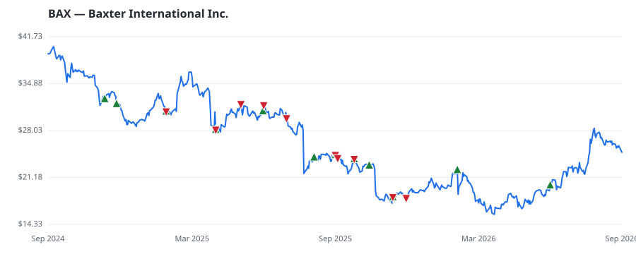

bullish · bearish · n/a — dots: price>SMA10 · SMA10>SMA50 · SMA50>SMA200 · up>down volume (20d)
Health Care Equipment & Services · large cap · ★ 3 buyer(s) sit on a committee that regulates this industry
Members who bought BAX earned a dollar-weighted -8.7% from their disclosure dates, versus +15.1% for the S&P 500 over the same holding windows (-23.8% alpha).

▲ green = a disclosed purchase · ▼ red = a disclosed sale (plotted on disclosure date)
Baxter offers a variety of medical supplies and equipment to providers. From its legacy operations, Baxter sells injectable therapies for use in care settings, including IV pumps, administrative sets, and solutions; nutritional products; and surgical sealants and hemostatic agents. Baxter expanded its portfolio of hospital-focused offerings by acquiring Hillrom in late 2021, which added basic equipment like hospital beds, operating room equipment, and patient monitoring tools to the portfolio. Baxter also sold its kidney care tools in early 2025. SURGICAL & MEDICAL INSTRUMENTS & APPARATUS · website
| Revenue | $11.2B | Net income | $-957.0M |
|---|---|---|---|
| Operating income | $-308.0M | Diluted EPS | $-1.87 |
| Assets | $20.1B | Equity | $6.1B |
| Member | Chamber | Out-performer | Disclosed buys $ | Return on buys |
|---|---|---|---|---|
| Rohit Khanna | house | — | $80K | +1.1% |
| Earl Blumenauer ★ | house | — | $32K | -32.7% |
| Lisa McClain ★ | house | — | $24K | -6.9% |
| Rob Bresnahan | house | — | $8K | -19.4% |
| Debbie Wasserman Schultz ★ | house | yes | $8K | -23.8% |
| Michael T. McCaul | house | — | $8K | +11.6% |
Disclosed $ figures are bracket midpoints — filings report ranges (e.g. $1,001–$15,000), not exact amounts.
| Fund | Fund alpha vs SPY | Position | % of book |
|---|---|---|---|
| Arnhold LLC | +26% | $13M | 0.9% |
| American Assets Investment Management, LLC | +33% | $1M | 0.1% |
| Gifford Fong Associates | +15% | $1M | 0.1% |
Hedge data: SEC EDGAR 13F · ranked funds beat SPY in >50% of their quarters · fund alpha = mirror-portfolio return minus SPY.